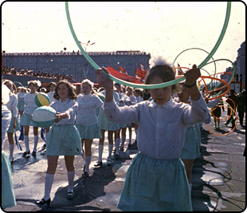
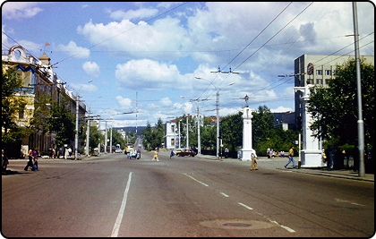
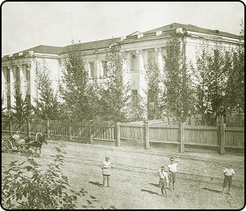

Фотоархив
Карта
Хронология
ИСТОРИЯ РЯДОМ
25
ноября
Перейти к статье
Новые статьи

Читать

Читать

Читать
О проекте
ИСТОРИЯ РЯДОМ
- портал, посвященный культурной и архитектурной истории Читы.
Он создан для помощи в поиске информации, развитию кругозора, совершенствованию знаний о родном городе и ностальгии.
Приятного путешествия во времени!